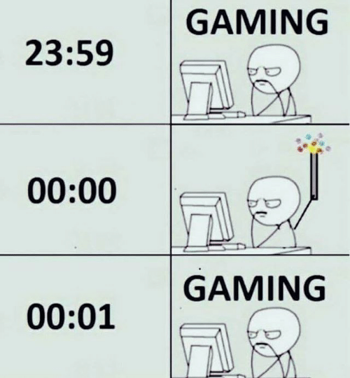
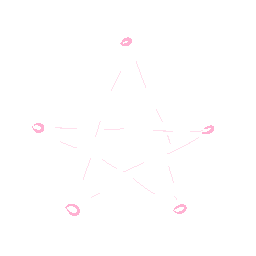
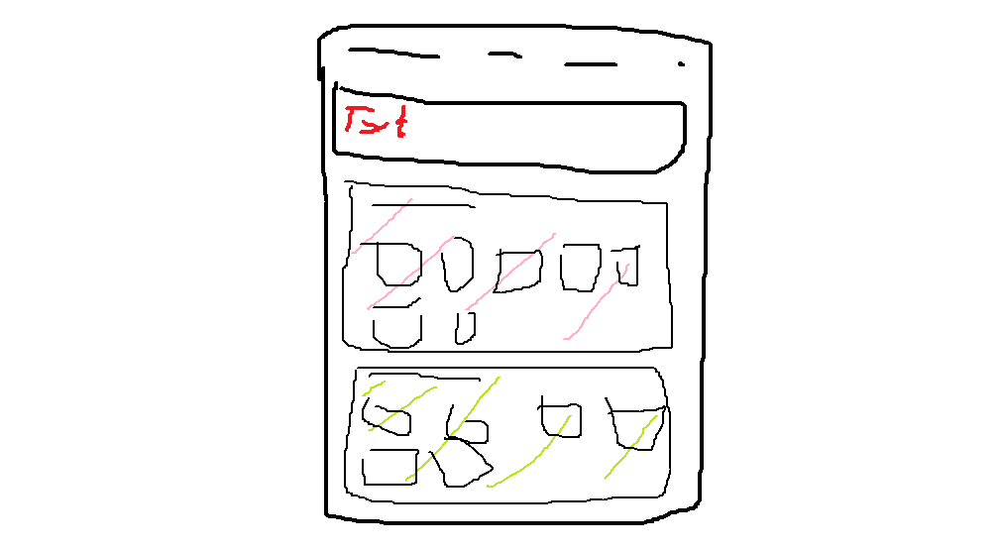

Happy New Year everyone! How did your evening went?
For me it was pretty boring, like every year there's 50 people coming to my home and doing party stuff. It's too much for me so 80% of the time I just lock up myself in my room (˘･_･˘;).
So the celebration pretty much looked like this for me:
Except I was in my bed doing nothing, tell me which one of the two versions is more depressing? (✿◡‿◡)
However, that isn't the main subject of this blog.
First please tell me how you draw a star! (aka in which order do you draw the lines)

At first (and basically always) drew them like this:
But during the night while trying to sleep, I experimented with another way to draw it,
like this!
You might think this has no difference, but I actually have better looking stars with the 2nd methods, don't ask me why.
Anyway I'm still gonna draw stars the same way, because you can't kill the old way of doing it! Even if that way causes my stars to be oddly shaped and inconsistent (;°Д°).
Thanks for reading my blog! I didn't say much about my life because it isn't that interesting anyway, byee!
Oh, And I've started working on a new page, here's a small peak:
